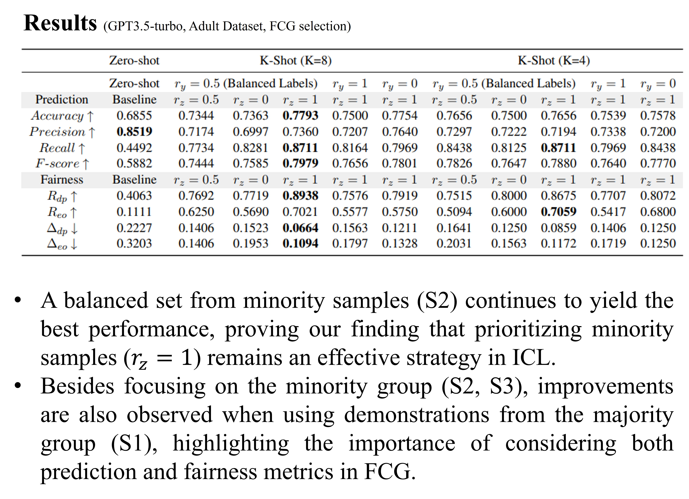

{kind=link}

Recent studies highlight the effectiveness of using in-context learning (ICL) to steer large language models (LLMs) in processing tabular data, a challenging task given the structured nature of such data. Despite advancements in performance, the fairness implications of these methods are less understood. This study investigates how varying demonstrations within ICL prompts influence the fairness outcomes of LLMs.
Our findings reveal that deliberately including minority group samples in prompts significantly boosts fairness without sacrificing predictive accuracy. Further experiments demonstrate that the proportion of minority to majority samples in demonstrations affects the trade-off between fairness and prediction accuracy. Based on these insights, we introduce a mitigation technique that employs clustering and evolutionary strategies to curate a diverse and representative sample set from the training data. This approach aims to enhance both predictive performance and fairness in ICL applications. Experimental results validate that our proposed method dramatically improves fairness across various metrics, showing its efficacy in real-world scenarios.
Keywords: LLMs, Fairness, In-context Learning, Tabular Data
@article{hu2024strategic,
title={Strategic Demonstration Selection for Improved Fairness in LLM In-Context Learning},
author={Hu, Jingyu and Liu, Weiru and Du, Mengnan},
journal={arXiv preprint arXiv:2408.09757},
year={2024}
}